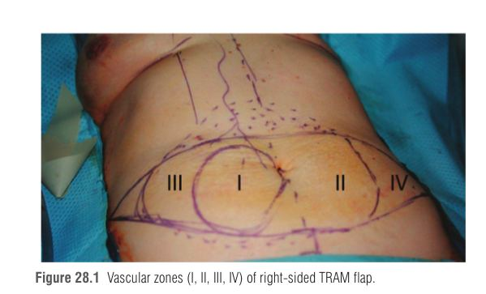
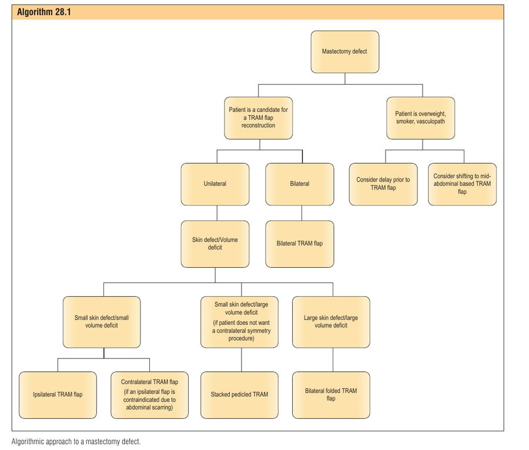
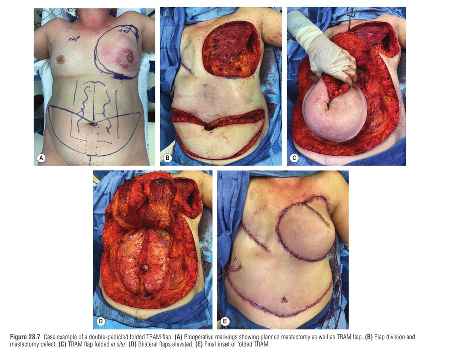

פרק 28: שחזור שד עם דש TRAM על פדיקל Breast Reconstruction with the Pedicle TRAM Flap
מתוך Plastic Surgery, Neligan – כרך 5: Breast | מאת Jake C. Laun ו-Julian J. Pribaz
דש TRAM (Transverse Rectus Abdominis Myocutaneous flap) מעביר עור, שומן ושריר ישר-בטן (rectus abdominis) מהבטן התחתונה אל חזה שעבר כריתה. בגרסת הפדיקל (pedicled) הדש נשאר מחובר לכלי הדם העליונים שלו ואינו נחתך ממקורו - ולכן אין צורך במיקרוכירורגיה. הנקודה הקלינית: כמות רקמה גדולה מאוד לשחזור אוטולוגי מלא בלי שתל, ובונוס של "מתיחת בטן"; המחיר: דרישה לטיפול קפדני בדופן הבטן ורגישות לאספקת דם משנית (העליונה) שהיא החלשה מבין שתי המערכות.
1 היסטוריה וקונטקסט
הניסיון הראשון לשחזור שד: Czerny, 1893. ה-TRAM הראשון: 1980, Carl Hartrampf (פרסום 1982).
העיצוב המקורי נשען על עור ושומן של הבטן העליונה (צלקת באמצע הבטן); התפתח ל-TRAM של הבטן התחתונה (צלקת רוחבית נמוכה). שינוי נוסף: פרוצדורת delay.
הדש ענה על חיסרון של latissimus dorsi, שלרוב נזקק לשתל כדי להגיע לנפח הרצוי, ועל מצבים של פגם דופן חזה שדורש יותר רקמה ממה ששיטות אחרות מספקות.
2 אנטומיה ווסקולריות - "למה הדש חי"
שריר ה-rectus abdominis הוא Mathes-Nahai type III - שני פדיקלים דומיננטיים: העליון (superior epigastric, המשך של ה-internal thoracic/mammary) והתחתון (deep inferior epigastric). שתי המערכות נפגשות בשריר באזור הפריאומביליקלי דרך כלי דם צרים ("choke vessels").
ב-TRAM על פדיקל חותכים את הכלי התחתון (מנתקים ביד את ה-DIEA ב-arcuate line) והדש חי על הכלי העליון בלבד. כלומר הדם חייב לעבור "קדימה" דרך ה-choke vessels כדי להגיע לעור הבטן התחתונה והרחוקה. לעומת זאת ב-free TRAM / DIEP הדש מבוסס על המערכת התחתונה (הגדולה והדומיננטית, כי היא יוצאת קרוב לכלי האם) ומחובר מחדש בעזרת מיקרוכירורגיה. המחברים מדגישים שדש עליון הוא בטוח ושימושי בפועל.
ענפים נוספים: עורקים עוריים-מחוררים (perforators) עולים מהשריר לעור מדיאלית ל-linea semilunaris, וצפופים ביותר סביב הטבור - לכן החתך העליון נעשה 2-4 ס"מ מעל הטבור כדי לתפוס את ה-perforators הפריאומביליקליים. תרומה קטנה גם מנקבים בין-צלעיים 7-12. עצבוב מוטורי: T8-T12 (נחתך ולכן השריר מתנוון לאחר הניתוח).
סיווג Moon-Taylor לכלי התחתון: סוג I = כלי יחיד תוך-שרירי; סוג II = התפצלות כפולה בגובה ה-arcuate line; סוג III = שלושה ענפים מעל ה-arcuate line בדרך לחיבור עם המערכת העליונה.
ארבעת אזורי הפרפוזיה (unilateral)
סכמה: מיקום האזורים ביחס לשריר הנושא את הפדיקל (איור 28.1 בפרק).
אזור I - ישירות מעל השריר. אזור II - מעבר לקו האמצע. אזור III - מחוץ לשריר באותו צד. אזור IV - הצד ההפוך, לטרלי (הכי רחוק מהפדיקל).
בעבר חשבו ש-II עדיף על III; ניסיון ומחקרי פרפוזיה הראו ש-III דומה ואף אמין יותר מ-II.
בשחזור חד-צדדי משתמשים ב-I וחלק מ-II ו-III, וזורקים את IV (אספקת דם הגרועה ביותר). בדו-צדדי כל צד תורם בעיקר I וחלק פרוקסימלי של III - כך שיש שני אזורים לכל פדיקל.

אזורי הפרפוזיה I–IV של דש TRAM ימני — Neligan 5th ed., Fig. 28.1
3 בחירת מטופלת ותזמון
יתרונות: נפח גדול מאוד (בדרך כלל שחזור עצמוני מלא ללא שתל); הסרת עודף רקמת בטן כמו בביצוע abdominoplasty; מתאים גם לפגמי חזה/סטרנום; אפשר שחזור מיידי (בזמן הכריתה) או מאוחר; ב-skin-sparing/nipple-sparing אפשר דש טמון ו-de-epithelialized דו-צדדי.
חיסרון מצוטט: החלשת דופן הבטן והרניה - שיופחתו בסגירה קפדנית (ראו מטה).

גישה אלגוריתמית לפגם לאחר מסטקטומיה: בחירת TRAM חד-צדדי/דו-צדדי, מוערם או מקופל — Neligan 5th ed., Algorithm 28.1
הקשר לקרינה
קרינה אינה צפויה: אם ניתנת אחרי השחזור היא פוגעת באסתטיקה, גורמת לצימוק (contracture) ולשינויי פיגמנטציה של הדש. לכן ממליצים להשלים קרינה לפני השחזור הסופי; הכותבים מבצעים אותו 6-9 חודשים לאחר סיום הקרינה (הערכה בקליניקה סביב חודש 6).
מצב
עמדה
מועמדת מתאימה
בטן עם עודף רקמה מספק לנפח הדרוש; ציפיות מציאותיות
לא מועמדת מתאימה
מחלות רקע משמעותיות, הפרעה פסיכיאטרית, השמנת יתר ניכרת, מעשנות כבדות, ניתוחי בטן גדולים קודמים (למשל abdominoplasty או חתך תת-צלעי גדול מכריתת כיס מרה פתוחה), כאב גב בלתי מאוזן/פיברומיאלגיה/כאב כרוני
הריון עתידי
אינו התוויית נגד מוחלטת - יש דיווחים על הריון ללא עלייה בסיבוכי דופן בטן
עישון / השמנה / סוכרת
לשקול delay או העברה לדש גבוה יותר בבטן; בהשמנה קיצונית שקלו שיטה אחרת (Algorithm 28.1)
4 סימונים וטכניקה כירורגית
סימון
טרום-ניתוחי: קו אמצע (מסטרנום עד מעבר לטבור), קפל תת-שדי (IMF) דו-צדדי, קו המסמן את הגבול העליון של רקמת השד בגובה שיא בית השחי, חתכי הכריתה המתוכננים, ואם מתוכנן - "Bikini Inset".
תוך-ניתוחי: חתך עליון 2-4 ס"מ מעל הטבור (כדי לתפוס perforators פריאומביליקליים); חתך תחתון 6-7 ס"מ מעל ה-introitus.
הערכת הפגם והערכת חיוניות מעטפת העור של הכריתה: חיתוך עד קצה שמדמם, או הדמיה פלואורסצנטית (SPY / ICG).
הרמת הדש: חתך סביב הטבור; מומלץ de-epithelialization של החלק שייטמן בעוד הוא על הבטן ותחת מתח קל. הרמה בשכבה תת-Scarpa ל-4-5 ס"מ ואז ברמת הפאשיה עד האפיגסטריום תוך "שיפוע" כדי לתפוס מקסימום perforators; לא לנתח לטרלית מעל הקשת הצלעית כדי לשמר perforators לטרליים.
פתיחת נדן השריר (rectus sheath) רוחבית, שחרור קצה מדיאלי ולטרלי של השריר; בקצה הלטרלי נראים נקבים בין-צלעיים רבים הנכנסים לפני השטח התחתון של השריר - אלה נצרבים ונחתכים. מתחת ל-arcuate line יש שתי שכבות נדן שמתאחדות לשכבה אחת מעל הטבור.
חיתוך השריר בגובה ה-arcuate line, קשירה וחיתוך כלי ה-inferior epigastric - והדש מורם מלמטה למעלה כדש מבוסס על ה-superior epigastric. נקבים קטנים לנדן האחורי נצרבים כדי שלא יתכווצו לשריר וידממו.
בדיקה ודיכוי: בודקים דימום מקצה אזור III; אחר כך מסירים ומדללים אותו תת-Scarpa כי הוא ישמש לשחזור החלק העליון של השד.
מנהרה: גישה מדיאלית (מפנה טבעי לשריר ופדיקל, ולא פוגעת ב-IMF). המנהרה רחבה דיה למעבר דש. דוחפים את הדש (pushed rather than pulled).
העברה והרכבה: אזור III מועבר קדימה וכלפי מעלה; סיבוב דש ימני בכיוון השעון, שמאלי נגד כיוון השעון (בשימוש באותו צד) כדי למנוע סיבוב פדיקל. התיישבות ב-sutures (קוויל) ודרנים בקפל ובבית השחי אם נעשה דיסקציה.
סגירת דופן הבטן עם רשת (ראו מטה), סגירת טבור והשארת דרנים בבטן.
שימו לב: דש מהצד ההפוך (contralateral) מציב למעלה את אזור II הפחות מפורפז, מעביר יותר נפח בליטה דרך האפיגסטריום ופדיקלו קצר יותר. הכותבים מעדיפים ipsilateral: משמש את אזור III המשופר כחלק העליון, פדיקל ארוך יותר (תנועה ורוטציה טובים יותר) ופחות בליטה באפיגסטריום. מצב חריג: חתך תת-צלעי גדול קודם (למשל כריתת כיס מרה פתוחה) עלול להסתיים בחתיכת כלי ה-superior epigastric בצד הזה - ואז משתמשים בדש מהצד ההפוך.
סגירת דופן הבטן - הלב של המניעה
הרמת השריר מסירה את התמיכה הראשית בדופן הבטן הקדמית, ולכן ללא תיקון מתפתחות בליטה (bulge) והרניה.
הצעדים: רשת פוליפרופילן (polypropylene mesh) מושמת כ-inlay בפגם שנוצר מהוצאת השריר, ברוחב השריר; המשיכה של הרשת מתאפשרת רק בכיוון אחד ולכן ממקמים אותה בכיוון עליון-תחתון למניעת בליטה. תופרים ל-linea alba (מדיאלית) ול-conjoint fascia של ה-external/internal oblique בנדן (לטרלית), בתפרי פוליפרופילן קבורים מופסקים ואחר כך תפר רץ שמקדם את הפאשיה על הרשת (~30% מהרשת קבור) עם מתח שמחזיר את טונוס המנוחה של השריר. בדו-צדדי רשת גדולה אחת עם חור לטבור. גם אם אפשר לסגור ראשונית - משתמשים ברשת (חזק יותר, פחות הרניה, פחות תזוזת טבור).
תוצאה: שיעור חריגות דופן (laxity/bulge) ירד מ~48% ל-1%-2% עם סגירה קפדנית ורשת. אין הבדל מובהק בהרניה בין DIEP ל-TRAM כשהסגירה טובה.
5 שיטת "Bikini Inset" לדש מאוחר בשד מוקרן
בשד שהוקרן ושוחזר באיחור, העור הדבק והצלקתי מקשה על ההרכבה. הכותבים תיארו שיטה שמסדרת את הדש כך שיחקה את היחידות האסתטיות של השד. שלוש נקודות מסומנות לפני הניתוח:
נקודה
מיקום
למה זה חשוב
C - Cleavage
הנקודה המדיאלית ביותר של ה-cleavage, לרוב ~1 ס"מ מקו האמצע (מדיאלי לצלקת הכריתה)
שחרור כאן נותן מלאות מדיאלית וסופרומדיאלית
A - Axillary tail
קפל בית השחי הקדמי, לאורך הגבול הסופרולטרלי של ה-pectoralis major
משחזר את זנב השד
B - Breast meridian
מפגש ה-IMF החדש עם מרידיאן השד
מגדיר את ה-IMF החדש (שיפוע מ-C ל-B, לפחות 1 ס"מ מעל ה-IMF הישן, ואז מעלה לקפל בית השחי)
חותכים לאורך הקווים ומרימים דשים עליונים ולטרליים בעוד שהמשולש האינפרומדיאלי נשאר מחובר לדופן החזה - והוא יעבור de-epithelialization וייטמן מתחת לדש. הדש מוכנס מנקודה C לאורך ה-IMF החדש, ומשחזר צורה ופטוזיס טבעיים.
זכירה: "CBA - בגד ים של בטן"
C-B-A = Cleavage → Breast meridian → Axillary tail - מהמרכז החוצה כמו סדר קישור של תחתוני ביקיני שעולים מהחזה לבית השחי.
סיפור: דמייני בגד ים בשני חלקים: הרצועה האמצעית נוגעת בעצם החזה (C), הכוס בנקודת השיא (B), והרצועה מתנשאת אל בית השחי (A). הדש של הבטן הוא "בד" שנתפר בדיוק לאורך הגבולות האלו.
6 שינויים בדש (Modifications)
וריאנט
מתי
עיקרון
Ipsilateral pedicled TRAM
ברירת מחדל, פגם חד-צדדי קטן-בינוני
III למעלה; פדיקל ארוך; פחות בליטה באפיגסטריום
Contralateral TRAM
כשאי אפשר ipsilateral (צלקת בטן)
II נמצא למעלה; פדיקל קצר יותר
Double-pedicle folded TRAM
פגם עור גדול + גרעון נפח ביחד (נשאר שד נגדי רגיל או מופחת), למשל מקרה שנכרת/הוקרן/חוזר
שני הפדיקלים העליונים - כל עור הבטן התחתונה מאוורר; הקיפול נותן שד חרוטי עם הקרנה
Bilateral stacked pedicled TRAM
צורך בנפח רב אך לא בעור רב, ובלי רצון בניתוח בצד הנגדי
הדש הצדדי de-epithelialized ונכנס אנכית ("כמו הפיכת דף") ו"נערם" עם הדש השני שנושא את עור האי - צורת דמעה
Delay
השמנה, עישון, סוכרת
ראו סעיף 7
High (mid-abdominal) TRAM
ירידה בפרפוזיה בבטן
לוכד יותר perforators פריאומביליקליים ועליונים; החיסרון: צלקת גבוהה ובולטת

דש TRAM כפול-פדיקל מקופל: סימונים, חלוקת הדש, קיפול in situ, הרמה דו-צדדית ותוצאה סופית — Neligan 5th ed., Fig. 28.7
7 פרוצדורת Delay - למה היא מצליחה
מכיוון שהאספקה הדומיננטית היא התחתונה, אפשר להכין את המערכת העליונה מראש: במהלך ניתוח קצר באמבולטורי כ-שבועיים לפני, ה-inferior epigastric נקשר ונחתך. הזרימה הנכפית דרך המערכת העליונה גורמת להרחבת ה-choke vessels בין שתי המערכות.
8 טיפול לאחר ניתוח
אשפוז 3-5 ימים. הוצאת קטטר שתן, קימה והליכה ותרופות פומיות כבר ביום 2-3. כאבי גב שכיחים (הליכה כפופה עם הליכון).
אנטיביוטיקה כל עוד יש דרנים (לרוב עד ביקור שבוע 1). הדרנים נשארים עד פחות מ-30 סמ"ק ליום במשך יומיים רצופים (מקטין סרומה).
מניעת DVT: מכשירי דחיסה (SCD) בניתוח ועד הליכה מלאה + הפרין/אנוקספרין; שחרור עם פרופילקסיס כימי בסיכון גבוה.
חיזוק ליבה (קירוב טבור "pulling in"), יכול להתחיל אפילו טרום-ניתוחית. משככי כאב ארוכי טווח (On-Q).
ניתוחים משניים (שחזור פטמה-הילה, ליפוסקשן, שתל שומן): 4-6 חודשים לאחר השחזור, אחרי השלמת הטיפולים המשלימים.
9 סיבוכים וגורמי סיכון
גורמי סיכון
פגם גדול (>9 ס"מ); רקמה מקומית ו-mastectomy flaps בפרפוזיה ירודה; כריתת pectoralis major; קרינה; שד נגדי גדול; IMF חסר/ירוד; הישנות מקומית; עישון פעיל או מפסיקה לאחרונה (בתוך 4 שבועות); מחלת כלי דם קטנים (סוכרת, סקלרודרמה); השמנה (BMI >35); הפרעות פסיכוסוציאליות; חוסר ניסיון של המנתח.
סיבוך
שכיחות / ניהול
נמק עור הכריתה (mastectomy flap necrosis)
~10-30% לאחר skin-sparing; מניעה: בדיקת דימום/ICG/SPY והסרת עור לא חי בזמן שחזור מיידי
נמק שומן / נמק חלקי של הדש
נמק חלקי 10%-18% (גבוה יותר בהשמנה, עישון, קרינה); אובדן דש מלא <1%; שימוש באזורים II ו-IV מעבר ל-III מעלה אובדן קל
מצוקה ורידית (venous congestion/hypertension)
זמנית; פתרון: צנתור ורידי קטן (DIEV cannulation) ושאיבת 1-2 סמ"ק דם להשוואת לחץ - מסתדר תוך שעות. ראו להלן
בליטה/הרניה בדופן הבטן
תלוי בסגירה: מ-~48% ל-1%-2% עם רשת; סרומה בבטן - נמנעת בהשארת דרנים עד <30 סמ"ק
צלקת בולטת / עיוותי עור בבטן
תיקון במהלך ניתוחי תיקון
צפיפות ורידית - למה ואיך מטפלים
ניקוז הדש יכול להיות תלוי במערכת הוורידית השטחית או העמוקה. כשהמסלול הוורידי אינו מספיק או נחסם - הדם נכנס אך אינו יוצא, והדש מתנפח ומכחיל (congestion).
במהלך הניתוח: דחיסה/קינקינג של כלי - שחרור החלק הלטרלי של השריר והימנעות מסיבוב הפדיקל; ורידים עמוקים מורחבים או ניקוז לא מספיק - supercharge - חיבור עורק וווריד epigastric תחתונים ל-internal mammary, או superdrain - חיבור ה-inferior epigastric vein ל-thoracodorsal vein, שהפחית נמק חלקי ופיברוזיס; לאחר הניתוח - שחרור תפרים, עלוקות, ואם אין שיפור חזרה לחדר ניתוח.
Supercharging נותן דש עם אספקה עליונה וגם חיבור נוסף, ללא הסיכון לאובדן מלא כמו ב-free TRAM, ומשפר תוצאות במטופלות עם עודף משקל והשמנה.
הערות נוספות
אטרופיה: הנפח המדיאלי של הדש יורד עם הזמן עקב אטרופיה מדנרבציה - לכן עושים דש מעט גדול מהצד הנגדי; אפשר ליפוסקשן בעת בניית הפטמה.
סימטריה: כמעט תמיד מטפלים בשד הנגדי (הקטנה בו-זמנית מקטינה את הנפח הדרוש ומורידה סיכון לנמק שומן; mastopexy לרוב משנית).
תפירה: חיבור עור כריתה עבה לדש de-epithelialized עלול להיות לא אחיד; הפתרון: vertical mattress עמוק בדש ו-horizontal mattress שטחי בעור הכריתה.
שביעות רצון: ~8.3/10 בסדרת המחברים; ~75% מרוצות (Moscona) ורק ~12% לא מרוצות. אין הבדל משמעותי במחלות דופן בין free ל-pedicled בשנה.
10 מקרה קליני ותרגול
וינייטה
אישה בת 52 עם סרטן שד ימני, לאחר כריתת שד ימין וקרינה שהסתיימה לפני 8 חודשים. היא מבקשת שחזור ללא שתל. BMI 27, לא מעשנת, ללא סוכרת. בבדיקה: בטן תחתונה עם עודף רקמה, וצלקת תת-צלעית ימנית ארוכה מכריתת כיס מרה פתוחה לפני 15 שנה. השד השמאלי בינוני עם פטוזיס.
1. מהי אספקת הדם העיקרית לדש TRAM על פדיקל, ומה ההבדל מ-free TRAM?
נכון: בפדיקל זרימה דרך המערכת העליונה (המשך של ה-internal thoracic), בעוד free TRAM ו-DIEP נשענים על ה-inferior epigastric, הכלי הדומיננטי. תשובה 0 הפוכה. תשובה 1 שגויה - הכלים שונים. תשובה 3 - הנקבים הבין-צלעיים תורמים מעט בלבד.
2. בשחזור חד-צדדי עם TRAM על פדיקל, איזה אזור מושמט בדרך כלל ומדוע?
נכון: אזור IV (לטרלי בצד הנגדי) הוא הגרוע ביותר מבחינת פרפוזיה. אזור I הוא הטוב ביותר. מחקרי פרפוזיה הראו שאזור III דומה או טוב מ-II, לא פחות. ולכן משתמשים ב-I וחלק מ-II ו-III.
3. מה המנגנון שבו פרוצדורת delay משפרת את הדש?
נכון: ה-delay מכין את המערכת העליונה דרך כפיית זרימה והרחבת choke vessels. תשובה 0 הפוכה. תשובה 2 מתארת supercharge, לא delay (והוא נעשה בעת הניתוח). תשובה 1 לא קשורה.
4. איזו טכניקת סגירה מורידה את שיעור הבליטה/הרניה בדופן הבטן מ-~48% ל-1%-2%?
נכון: הרשת (גם כשאפשר לסגור ראשונית) מחזקת את התיקון ומשחזרת מתח; הכיוון העליון-תחתון נבחר כי הרשת נמתחת בכיוון אחד. תשובה 0 מנוגדת להמלצה. תשובה 2 שגויה. תשובה 3 אינה פתרון - לא קשורה לסגירת הבטן.
5. שעות אחרי השחזור הדש סגול ומתוח עם מילוי נימי מהיר - חשד למצוקה ורידית. איזו גישה אינה מתאימה?
הפעולה הלא נכונה היא להסתפק בנוגדי קרישה בלבד: מצוקה ורידית מחייבת פתרון מכני/ניקוז. האחרות מופיעות באלגוריתם 28.2 (שחרור תפרים, עלוקות, DIEV cannulation, ואחר כך חזרה ל-OR).
6. לפי הוינייטה (קרינה לפני 8 חודשים, צלקת תת-צלעית ימנית), מה הפתרון הנכון?
נכון: חתך תת-צלעי גדול עלול לחתוך את הכלים העליונים באותו צד, ולכן משתמשים בצד ההפוך. התזמון תואם (6-9 חודשים לאחר סיום קרינה). הקרינה אינה התוויית נגד - ההפך, עדיף שהיא תקדים. תשובה 0 מתעלמת מהסיכון; תשובה 2 לא נחוצה.
11 סיכום של הסיכום
Pedicled TRAM = עור+שומן+rectus על superior epigastric (מ-internal thoracic); free TRAM/DIEP = inferior epigastric (דומיננטי) + מיקרוכירורגיה.
Rectus = Mathes-Nahai type III; עצבוב T8-T12 (אטרופיה לאחר חיתוך).
אזורי פרפוזיה: I מעל השריר; II מעבר לקו אמצע; III באותו צד; IV הגרוע - נזרק. III ≥ II.
העדפה: ipsilateral (III למעלה, פדיקל ארוך, פחות בליטה); contralateral רק כשיש צלקת/ניתוק כלי.
חתך עליון 2-4 ס"מ מעל הטבור; תחתון 6-7 ס"מ מעל ה-introitus; מנהרה מדיאלית; דוחפים ולא מושכים; ימני בכיוון השעון.
קרינה לפני השחזור; שחזור 6-9 חודשים אחריה; Bikini inset (C-B-A) בשד מוקרן.